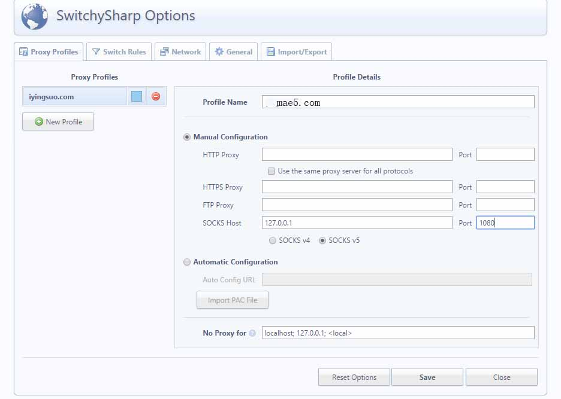

影梭 Shadowsocks
Windows系统Crome浏览器使用影梭教程
在windows系统中，有时候我们需要单独对浏览器进行设置，本文介绍 Chrome浏览器单独设置影梭的教程。

Chrome
一、Chrome 下的 Proxy SwitchySharp 插件
https://chrome.google.com/webstore/detail/proxy-switchysharp/dpplabbmogkhghncfbfdeeokoefdjegm?hl=zh-CN
也许您无法访问，也可以下载这个 .crx 文件
http://pan.baidu.com/s/1kTH3TJ5，提取密码：462s
下载完成后在 设置 >> 扩展，直接把该 .crx 文件拖入窗口然后安装即可
然后打开 Proxy SwitchySharp 的设置，新建一个情景，命名为 www.mae5.com，并设置好端口，模式为 socks5 如图：

再点切换规则，由于可能大概无法访问 Google，我们就启用切换规则，然后在 URL 模式里输入 *google* 统配好 Google 的所有域名，选择好模式匹配为通配符，情景模式为 www.mae5.com
然后把在线规则列表打钩，输入 URL 为
https://autoproxy-gfwlist.googlecode.com/svn/trunk/gfwlist.txt
勾选 AutoProxy 兼容列表，然后点立即更新，更新完成后保存即可，如图：

二、如果不想用插件，直接全局代理
就把桌面的快捷方式 chrome.exe 右键 属性 >> 修改 Chrome.exe 运行参数，在目标那一栏，最后的引号后面加上
--proxy-server="socks5://127.0.0.1:1080" --host-resolver-rules="MAP * 0.0.0.0 , EXCLUDE localhost"
就是说修改为类似（1080 为你设置的本地端口，如果设置了不同的端口请自行修改）
"C:Program Files (x86)GoogleChromeApplicationchrome.exe"--proxy-server="socks5://127.0.0.1:1080" --host-resolver-rules="MAP * 0.0.0.0 , EXCLUDE localhost"
然后运行 Chrome 即可